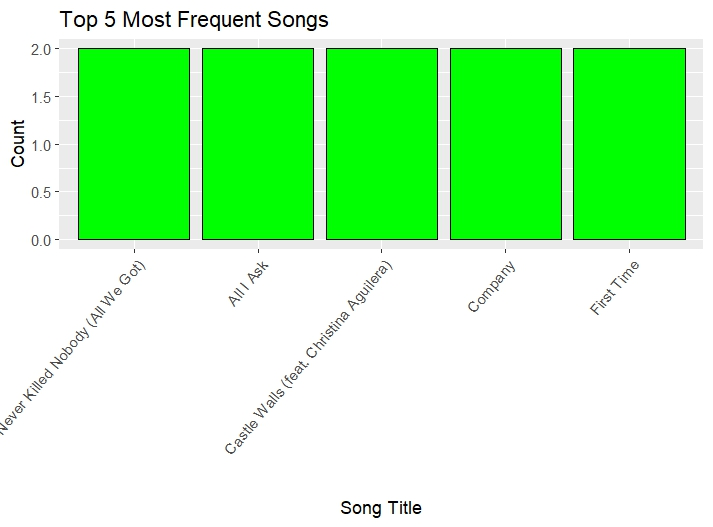
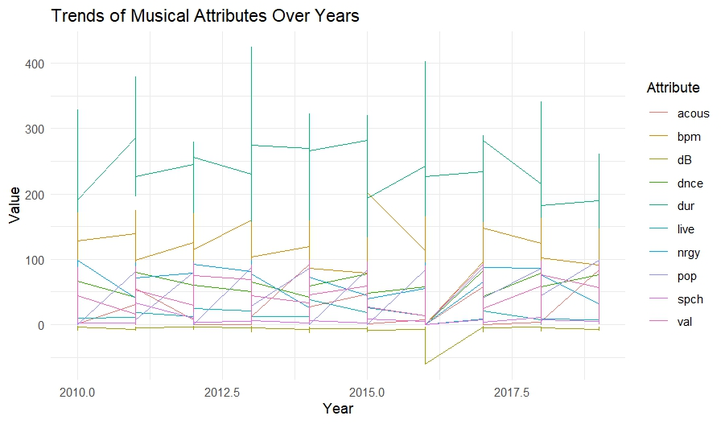

Key Findings
Explore the fascinating insights and trends discovered through our data analysis:
Top 10 Artists

Bar chart displaying the top 10 most streamed artists.
Top Songs
List of the top streamed songs.
Genre Distribution

Pie chart displaying the distribution of music genres.
Music Attribute Trends
Line chart showing the trends of music attributes over time.
Summary of numerical Attributes

Line chart showing the numericals columns.